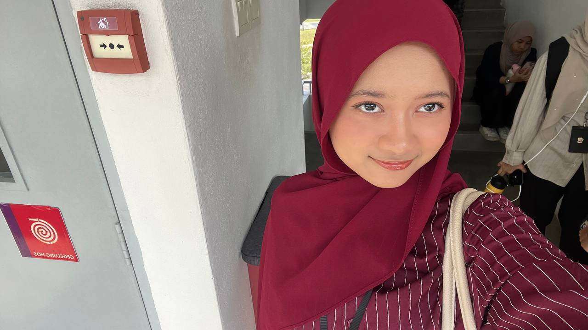
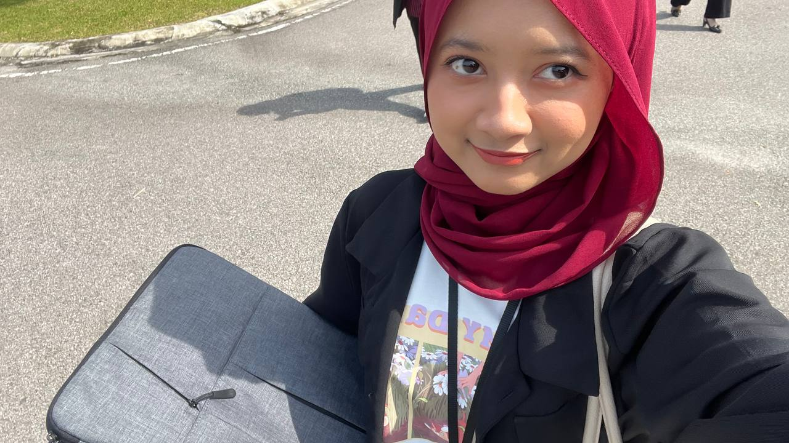

This section highlights the skills I have developed throughout my diploma journey, combining academic knowledge, hands-on experience, and continuous self-improvement.
Rather than focusing on numerical levels, this section explains how each skill contributes to my growth as a future information management professional.

These skills relate to digital tools, systems, and technologies that I apply throughout my academic coursework and assignments.

Soft skills support effective communication, teamwork, and professionalism in both academic and working environments.
My skills developed gradually throughout my diploma journey, with each academic year contributing new knowledge, experience, and confidence.
Built fundamental IT knowledge and basic communication skills.
Improved web design, database concepts, and teamwork experience.
Refined professional skills through projects, presentations, and collaboration.